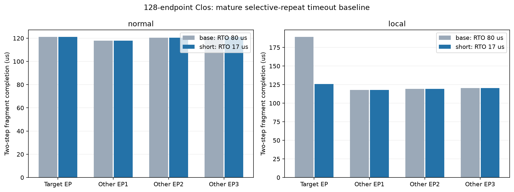

128端点Clos，四组EP32，四份真实R1专家选择，两层两个Decode步。声明计算、标记字节，不是完整模型或硬件实测。四次网络各执行一次；全部保留原门限与源ACK，均未启动备用。
normal不额外注入故障；local只在前20微秒丢弃GPU32的DATA，ACK等控制包保留。先运行80微秒超时的正常条件，用全部消息从ready到ACK的最长跨度的下一个整微秒，固定较短超时为17.0微秒。这个值包含排队，不是RTT测量；仅一个正常样本，无独立验证集。

| 条件 | 初始RTO µs | 目标完成µs | 其他组最晚µs | 排空µs | 故障丢包 | 超时次数 | 重传载荷B | 缓冲峰值B |
|---|---|---|---|---|---|---|---|---|
| base-normal | 80.0 | 121.12 | 121.12 | 121.12 | 0 | 0 | 0 | 1947456 |
| base-local | 80.0 | 189.208 | 120.531 | 189.208 | 2 | 1 | 14464 | 1832640 |
| short-normal | 17.0 | 121.12 | 121.12 | 121.12 | 0 | 0 | 0 | 1947456 |
| short-local | 17.0 | 125.977 | 120.531 | 125.977 | 2 | 1 | 14464 | 1904192 |
目标故障条件完成提前63.231微秒，首Dispatch门限提前63.0微秒；正常目标提前0.0微秒（负值表示变慢）。故障条件额外发送0字节，正常额外发送0字节。各其他组变化和实际丢包时刻在派生证据中逐项保留。
本次目标片段减少63.231微秒，相对原故障条件缩短33.42%。原正常/故障差为68.088微秒，成熟短超时收回其中92.87%；与原正常条件还差4.857微秒。剩余差距只用于本场景参考，不能直接称为新算法的可消除上限。
实际代价：两种故障条件均只重传14,464字节、丢2包，其他三组完成时间相同。短超时条件消息arena峰值增加71,552字节（1,832,640→1,904,192），因此不能称零开销。正常条件完整逐包及队列记录相同，没有多发数据。
因果链已经逐包核实：同一stream的两个原包在3.392/4.336微秒丢失。超时由81.030提前到18.030微秒；重传实际到达由83.392/83.502提前到20.392/20.502微秒，恰在20微秒故障结束之后。源确认及Dispatch门限由85.504提前到22.504微秒；输入早已到达的r68专家随门限开始，实际FIFO等待均为0。这说明本例主要卡在原始通信完成，而非缺少专家计算槽。
本次单故障窗口和稀疏负载有利于短超时重传成功；故障更久、排队更深或ACK受损时不能照搬收益。下一轮应在强基线下增加已有真实请求和故障窗口，检验误重传、重传竞争与健康任务影响，再判断按通信组进度分配恢复预算是否有额外价值。简单调低超时不作为创新。
这项对照检验直接推进原始通信确认能收回多少等待，属于成熟重传基线，不是新算法。收益须归给实际推进的原门限；不能把单份备用提前量、阶段提前量与任务提前量相加。若较短RTO已消除主要等待，就不能继续用80微秒基线宣称同等规模的创新收益。
四份请求是稀疏负载。正常样本校准不保证新负载下没有误重传；局部短时丢包也不覆盖链路断开、持续拥塞或ACK丢失。原正常/故障差距是本场景参考，不是理论可优化上限。完整推理、生产吞吐、经济收益尚未验证。
四份原图完全相同，配置仅初始RTO随策略改变；各次公开核验、贡献诊断和最终缓冲排空通过。没有构建或修改网络后端。派生证据 · 矢量图